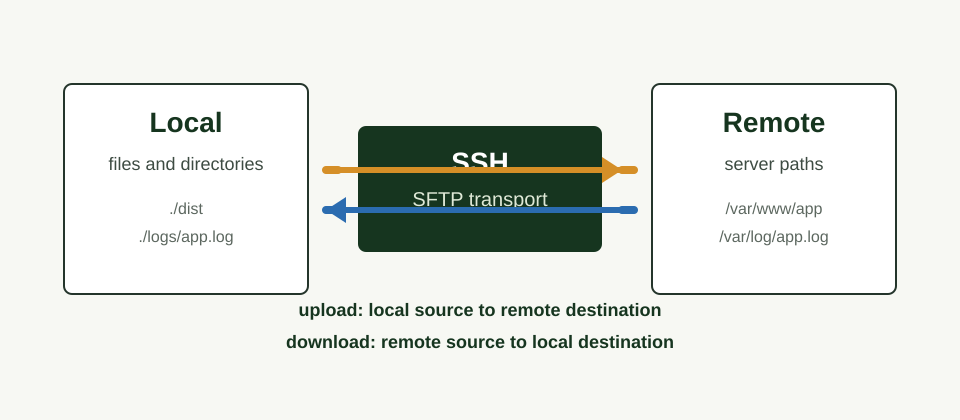

Secure SSH file transfers for Node.js
SCP-style commands with SFTP safety and a typed API.
`scp-next` uploads and downloads files or directories from a CLI, ESM import, or CommonJS require. It uses SFTP internally, keeps local and remote path terminology explicit, and redacts credentials from logs and errors.

Features
Files and directories
Upload and download files or directories recursively.
Clear CLI operands
Use familiar <source> <destination> order.
ESM and CommonJS
Use the library through ESM import or CommonJS require.
Reusable config
Use JSON configuration files, named profiles, and configured jobs.
Reusable client
Create one client, run multiple transfers, then close it reliably.
Security-conscious
Use SFTP internally and redact credentials from logs and errors.
Install
CLI
npm install --global scp-next
scp-next --helpLibrary
npm install scp-nextQuick Start
Upload with password authentication
scp-next upload ./dist /var/www/example \
--host your-host \
--username your-username \
--password your-password \
--recursiveDownload with password authentication
scp-next download /var/log/example.log ./logs/example.log \
--host your-host \
--username your-username \
--password your-passwordUse the library
import { upload } from "scp-next";
await upload({
host: process.env.SCP_NEXT_HOST,
username: process.env.SCP_NEXT_USERNAME,
password: process.env.SCP_NEXT_PASSWORD,
localPath: "./dist",
remotePath: "/var/www/example",
recursive: true,
overwrite: true
});CLI Usage
Commands use the standard operand order:
<source> <destination> [options].
| Operation | Source | Destination | Command |
|---|---|---|---|
| Upload | Local file or directory | Remote path |
scp-next upload <source> <destination> [options]
|
| Download | Remote file or directory | Local path |
scp-next download <source> <destination>
[options]
|
Upload with password authentication
scp-next upload ./dist /var/www/example \
--host your-host \
--username your-username \
--password your-password \
--recursiveDownload a log file
scp-next download /var/log/example.log ./logs/example.log \
--host your-host \
--username your-username \
--password your-passwordCLI Options
| Option | Description |
|---|---|
--host <host> |
SSH server host. |
--port <port> |
SSH server port. Defaults to 22. |
--username <username> |
SSH username. |
--password <password> |
SSH password. Prefer environment variables, agents, or keys. |
--private-key <privateKey> |
Private-key content. Redacted from logs and errors. |
--private-key-file <privateKeyFile> |
Private-key file path. Supports ~ expansion. |
--passphrase <passphrase> |
Passphrase for an encrypted private key. |
--config <path> |
Explicit configuration file path. |
--profile <name> |
Named server profile from the configuration file. |
--recursive |
Transfer directories recursively. Defaults to off. |
--overwrite |
Allow replacing existing destination files. |
--create-directories |
Create missing destination directories. Enabled by default. |
--no-create-directories |
Disable automatic destination directory creation. |
--dry-run |
Resolve and validate without connecting or transferring. |
--timeout <milliseconds> |
SSH connection ready timeout in milliseconds. |
--verbose |
Print non-sensitive diagnostic details. |
--quiet |
Disable progress and non-error output. |
--help |
Show command help. |
--version |
Show the package version. |
--timeout maps to the SSH readyTimeout. It controls
how long to wait for the connection handshake, not the duration of each file
transfer or the whole transfer run.
Library API
ESM and CJS
Import from ESM or require from CommonJS using the same public functions.
Explicit paths
Use `localPath` and `remotePath` so callers never infer locality from direction.
Reusable client
Create a client, connect once, perform multiple transfers, and close reliably.
ESM upload
import { upload } from "scp-next";
await upload({
host: process.env.SCP_NEXT_HOST,
username: process.env.SCP_NEXT_USERNAME,
password: process.env.SCP_NEXT_PASSWORD,
localPath: "./dist",
remotePath: "/var/www/example",
recursive: true,
overwrite: true
});Reusable client
import { createClient } from "scp-next";
const client = createClient({
host: process.env.SCP_NEXT_HOST,
username: process.env.SCP_NEXT_USERNAME,
password: process.env.SCP_NEXT_PASSWORD
});
try {
await client.connect();
await client.upload("./dist", "/var/www/example", {
recursive: true
});
} finally {
await client.close();
}Use a configuration file
import { readFile } from "node:fs/promises";
import { upload, type ScpNextConfig } from "scp-next";
const config = JSON.parse(
await readFile(new URL("./scp-next.config.json", import.meta.url), "utf8")
) as ScpNextConfig;
await upload({
...config.server,
...config.transfer,
localPath: "./dist",
remotePath: "/var/www/example"
});Library Options
| Field | Used by | Description |
|---|---|---|
host |
server | SSH server host. |
port |
server | SSH server port. Defaults to 22. |
username |
server | SSH username. |
password |
server | SSH password. Avoid logging or hard-coding this value. |
privateKey |
server | Private-key content as a string or Buffer. |
privateKeyFile |
server | Private-key file path. |
passphrase |
server | Passphrase for an encrypted private key. |
agent |
server | SSH agent socket path. |
hostFingerprint |
server | Expected server host-key SHA-256 fingerprint. |
knownHostsFile |
server | Known-hosts file for host verification. |
localPath |
upload/download | Local source for upload or local destination for download. |
remotePath |
upload/download | Remote destination for upload or remote source for download. |
recursive |
transfer | Transfer directories recursively. Defaults to false. |
overwrite |
transfer | Allow replacing existing files. |
createDirectories |
transfer | Create missing destination directories. Defaults to true. |
dryRun |
transfer | Validate and plan without modifying local or remote files. |
timeout |
server/transfer | SSH connection ready timeout in milliseconds. |
onProgress |
transfer | Progress callback for files and directory transfers. |
Advanced Usage
`scp-next` supports JSON configuration files, named profiles, reusable jobs, and environment variables. Explicit CLI input always wins.
Config file
{
"server": {
"host": "your-host",
"port": 22,
"username": "your-username",
"password": "your-password"
},
"transfer": {
"recursive": true,
"overwrite": true,
"createDirectories": true,
"timeout": 30000
}
}Configured job
{
"jobs": {
"deploy": {
"operation": "upload",
"profile": "production",
"source": "./dist",
"destination": "/var/www/example",
"recursive": true
}
}
}Explicit config path
scp-next upload ./dist /var/www/example \
--config ./deploy/scp-next.jsonConfig profile
scp-next upload ./dist /var/www/example \
--config ./scp-next.config.json \
--profile productionConfiguration File Options
Use scp-next.config.json in the current directory.
scp-next also auto-detects rc-style filenames:
.scp-nextrc and .scp-nextrc.json.
| Key | Description |
|---|---|
server |
SSH connection options such as host, port, username, and keys. |
transfer |
Transfer defaults such as recursive, overwrite, and timeout. |
defaultProfile |
Profile used when no CLI or environment profile is selected. |
profiles |
Named server connection profiles. |
jobs |
Reusable upload or download jobs for scp-next run. |
| root server keys |
Simple configs may place server keys such as host,
username, and privateKeyFile at the root.
|
Server Fields
| Field | Description |
|---|---|
host |
SSH server host. |
port |
SSH server port. Defaults to 22. |
username |
SSH username. |
password |
SSH password. Prefer environment variables or protected secrets. |
privateKey |
Private-key content. |
privateKeyFile |
Private-key file path. |
passphrase |
Passphrase for an encrypted private key. |
agent |
SSH agent socket path. |
timeout |
SSH connection ready timeout in milliseconds. |
hostFingerprint |
Expected server host-key SHA-256 fingerprint. |
knownHostsFile |
Known-hosts file for host verification. |
Transfer and Job Fields
| Field | Used by | Description |
|---|---|---|
operation |
jobs | upload or download. |
profile |
jobs | Named server profile for the job. |
source |
jobs | Origin path. Local for upload, remote for download. |
destination |
jobs | Destination path. Remote for upload, local for download. |
recursive |
transfer/jobs | Transfer directories recursively. Defaults to false. |
overwrite |
transfer/jobs | Allow replacing existing files. |
createDirectories |
transfer/jobs | Create missing destination directories. Defaults to true. |
dryRun |
transfer/jobs | Resolve and validate without connecting or transferring. |
timeout |
transfer/jobs | SSH connection ready timeout in milliseconds. |
Environment Variables
| Variable | Description |
|---|---|
SCP_NEXT_HOST |
SSH server host. |
SCP_NEXT_PORT |
SSH server port. |
SCP_NEXT_USERNAME |
SSH username. |
SCP_NEXT_PASSWORD |
SSH password. |
SCP_NEXT_PRIVATE_KEY |
Private-key content. |
SCP_NEXT_PRIVATE_KEY_FILE |
Private-key file path. |
SCP_NEXT_PASSPHRASE |
Passphrase for an encrypted private key. |
SCP_NEXT_TIMEOUT |
SSH connection ready timeout in milliseconds. |
SCP_NEXT_PROFILE |
Named configuration profile. |
SSH_AUTH_SOCK |
SSH agent socket used when agent authentication is available. |
Precedence
- Explicit CLI options
- Positional CLI operands
- Environment variables
- Selected configuration profile
- Root-level configuration values
- Configured job values
- Internal defaults
User Guides
Read the versioned user guides for a fuller introduction to installation, CLI transfers, configuration files, credential handling, library usage, and onboarding.
English
Security
- Transfers use SFTP through `ssh2-sftp-client`; normal transfers do not run remote shell commands.
- Passwords, passphrases, private-key contents, and tokens are redacted from logs and errors.
- Host verification is not silently disabled. Configure known hosts or a host fingerprint when required.
- Local paths use OS-aware Node path behavior; remote paths preserve POSIX `/` separators.
- Dry-run mode resolves and validates a transfer plan without connecting or modifying files.
Architecture
CLI layer
Parses operands and options, prints readable output, and maps failures to exit codes.
Client layer
Exposes upload, download, copy, and reusable client APIs without calling `process.exit()`.
Transport boundary
Keeps SFTP access mockable, which lets integration tests run without a production server.
For deeper implementation notes, read guides/ARCHITECTURE.md.